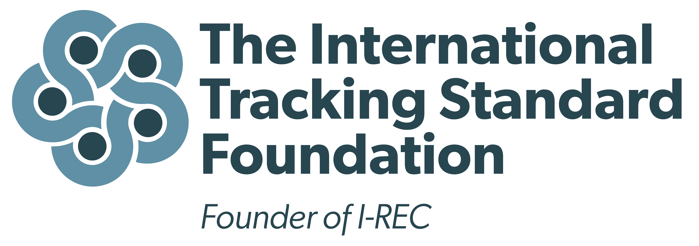
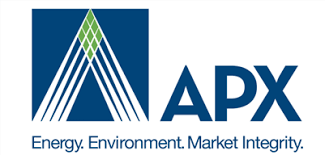

國際再生能源憑證 I-REC/TIGR
什麼是國際再生能源憑證 (I-REC/TIGR)?
I-REC 代表可轉讓證書，證明 1 兆瓦時的電力是由再生能源生產並輸入到電網中的。透過購買 I-REC，企業可以聲明自己消耗了相應的再生能源。I-REC 可以來自多種再生能源。與北美的再生能源證書 (REC) 類似，I-REC 代表了再生能源相關的環境屬性。
TIGR 是國際上另一種用來追蹤和認證再生能源的證書系統。TIGR 系統與 I-REC 相似，都是用來證明和追蹤某一兆瓦時的電力來自可再生能源。這些證書由 TIGRs 平台管理和發行，通常用於企業和組織的可再生能源採購策略中，以追蹤並報告其再生能源的使用情況。
管理 I-REC/TIGR 的企業
I-REC Standard Foundation
I-REC Standard Foundation 是管理和維護國際再生能源證書 (I-REC) 系統的非營利組織。他們提供一個全球標準，用於追蹤和認證由可再生能源產生的電力，幫助企業證明其使用的電力來自可持續能源來源。I-REC 系統在全球多個國家應用廣泛，支持企業實現其可持續發展目標。
APX
APX 是一家專注於能源和環境市場的全球領先基礎設施提供商。他們創建並管理 Tradable Instruments for Global Renewables (TIGR) 系統，為再生能源的追蹤和認證提供標準化的解決方案。APX 的技術支持各類環境市場，包括碳排放交易和可再生能源證書市場。

